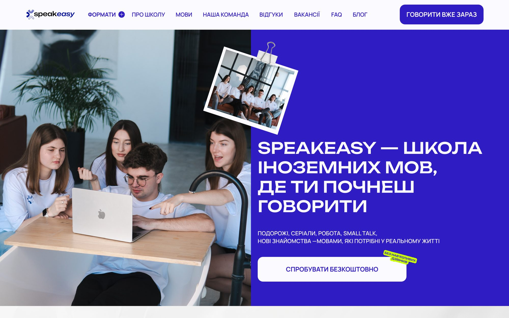
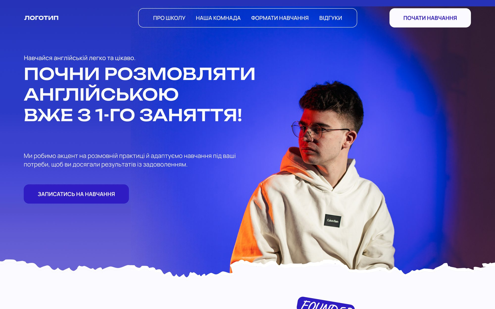

01
Speakeasy


Спершу я зробила для школи перший сайт, а згодом клієнт повернувся по редизайн. Прибрала зайвий декор, додала живі фото учнів і залишила одну головну дію: записатися на пробне заняття.
2версії сайту для одного клієнта
Перейти на сайт